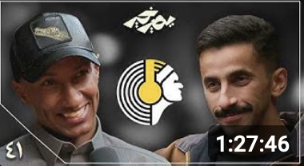
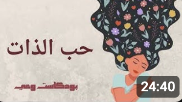
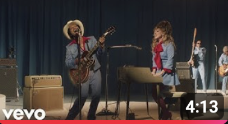

Mics | مايكس
1.28M subscribers
524K views • 2 months ago
إثر سم انتشر في جثتها، ينفجر عالم على جثة امرأة سكنت بعزلها من يعرفها بأنها "متضرعة من جرح" وكثفت التوقعات أن الأشخاص القريبة...

القضاء و القدر : بين الإيمان و العمل | د.عبدالرحمن الحرمي
11M views • 10 months ago
بودكاست يصير خير | الكتب غيرت حياتي - ناصر العقيل (دوباميكافين)
8.5K views • 4 days ago
Talk Fast Sound Smart | Learn English with Podcast Conversation | English Podcast
8.5K views • 4 days ago
#ABtalks with Huda Kattan | Chapter 217 | هدى قطان
8.5K views • 4 days ago

حب الذات| كيف أحب نفسي| كيف أزيد ثقتى بنفسي؟(بدون موسيقي)
8.5K views • 4 days ago

Lady Gaga, Bruno Mars - Die With A Smile (Official Music Video)
8.5K views • 4 days ago